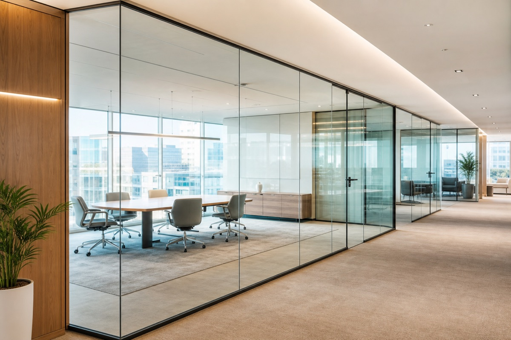

GlassStudio · Trade Partner Program
Glass Partner for Interior Designers & Architects in Hyderabad
You design the space, we handle the glass: measurement, fabrication, installation and finishing, on your site schedule, in HITEC City, Financial District, Gachibowli and across Hyderabad.
Why interior designers work with GlassStudio
On most interior projects the glass is one of the last items on site, and it is the one that holds up handover when it is late or wrongly sized. GlassStudio works as the glass vendor for interior designers, architects and fit-out contractors in Hyderabad, so you get one team responsible for the whole glass scope instead of chasing separate fabricators and fitters.
Send us the drawing or BOQ, we quote, our team takes final site measurements, and we install in coordination with your site supervisor. On designer-led projects we deal only through you, and your client stays your client.
- Quotes from drawings, BOQ or site photos
- Site measurement by our own team
- Installation planned around your site schedule
- One point of contact for the full glass scope
- Your client relationship stays with you
Glass work we do for interior projects
- Office glass partitions & cabins: full-height toughened glass partitions, manager cabins, meeting rooms and conference rooms for offices in HITEC City, Financial District and Gachibowli.
- Aluminium profile partitions: slim-profile, black-frame and fluted glass partitions for offices, homes and studios.
- Shower cubicles & bathroom glass: frameless and semi-frameless shower enclosures for apartments and villas.
- Sliding, telescopic & pivot doors: glass doors for living rooms, balconies, pooja rooms and wardrobes.
- Decorative glass: fluted, frosted, tinted and lacquered glass, mirrors and back-painted glass for feature walls and furniture.
- Glass railings: staircase and balcony railings with toughened or laminated glass.
- Shop fronts & facades: toughened glass storefronts and entrances for retail and showroom fit-outs.
How a project works with us
- Share the scope: send the drawing, BOQ, reference images or site photos on WhatsApp or email.
- Quotation: we send an itemised quote with glass type, thickness, hardware and finish options.
- Samples & finalisation: glass and hardware samples can be shown to you or your client before ordering.
- Site measurement: our team takes final measurements once civil and flooring work is ready.
- Fabrication & installation: glass is cut and toughened to size and installed by our own fitters, coordinated with your site supervisor.
- Handover: cleaning, silicone finishing and a final check with you before handover.
Areas we cover for interior and fit-out projects
We take interior projects across Hyderabad. Most of our designer and corporate fit-out work is in the west of the city: HITEC City, Financial District, Nanakramguda, Gachibowli, Kokapet, Narsingi, Madhapur, Kondapur, Manikonda, Jubilee Hills, Banjara Hills and Tellapur.
See local pages: Glass work in HITEC City, Glass work in Financial District, Glass work in Gachibowli, Glass work in Banjara Hills.
Frequently asked questions
Can you quote from a drawing or BOQ?
Yes. Send a PDF or CAD drawing or the BOQ on WhatsApp or email and we will quote the glass items. Final sizes are confirmed by site measurement before fabrication.
Do you deal directly with my client?
Not unless you ask us to. On designer-led projects we work through you and do not approach your client separately.
Can you handle multiple sites at the same time?
Yes. Share your upcoming project list and timelines and we will plan measurement and installation slots for each site.
Which areas of Hyderabad do you cover?
All of Hyderabad, with most projects in HITEC City, Financial District, Gachibowli, Kokapet, Madhapur, Kondapur, Manikonda, Jubilee Hills and Banjara Hills.
Have a project coming up?
Send the drawing or site photos on WhatsApp and get a glass quotation for your project.